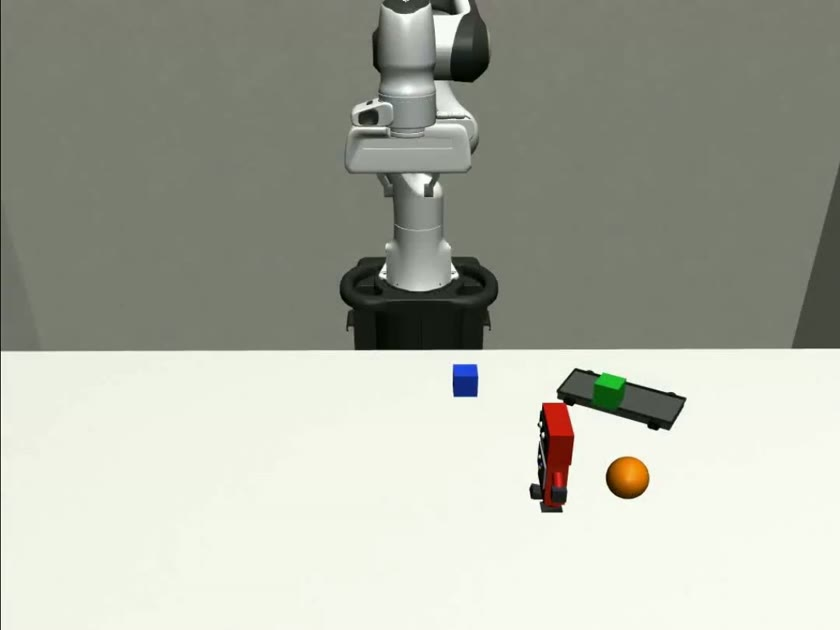
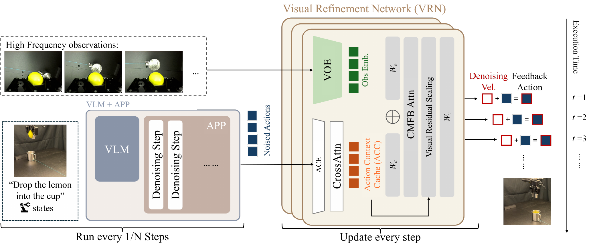

LoopActVisual feedback
Download original clip ↓ Personal project · Robot manipulation
LoopAct.
Visual feedback for
responsive robot actions
Plan an action chunk.
Keep responding as the world changes.
Visual-feedback action control and engineering exploration
REAL-TIME ACTION REFINEMENT● Simulation

6
Simulation tasks in the showcase
12
Original comparison clips
6
Implementation components
Explore action planning, visual refinement and cached execution.
01 / THE DEMONSTRATIONS
Same task. Different feedback.
Six tasks. Twelve original clips.
Select a task, then start both videos together.
DYNAMIC MANIPULATION
01 / 061D Moving Robot
The target moves along one axis while the robot attempts to catch and lift it.
GR00TOpen-loop baseline
Download original clip ↓These are the original VLA-Feedback demonstrations. The clips are provided by the upstream project. Clip durations differ; they are not time-normalized.
02 / THE METHOD
A slow plan.
A fast visual correction.
The final denoising transition becomes a feedback interface, so each action can incorporate the latest observation without rerunning the full planner.
Propose
VLM + APPA vision-language backbone and the Action Proposal Planner generate a near-final action chunk.
Reuse
ACE + ACCAction-side representations are encoded once and retained in the Action Context Cache.
Refine
VRN · VOE · CMFBCurrent visual observations are fused with cached action features to complete the final denoising update.
Explore the architecture

APP: Action Proposal Planner · VRN: Visual Refinement Network · ACE: Action Context Encoder · VOE: Visual Observation Encoder · CMFB: Cross-Modal Fusion Block · ACC: Action Context Cache.
03 / PERSONAL PROJECT WORK
From source code to a usable project.
Action planning, visual feedback and a browsable simulation showcase.
Organize
Use APP, VRN, ACE, VOE, CMFB and ACC to organize action planning, visual refinement and feature caching.
Preserve
Reuse cached action features across feedback steps. Keep model serialization and execution interfaces consistent.
Present
Build six task comparisons with paired playback, video downloads and responsive desktop and mobile layouts.
The underlying model and original demonstration clips come from VLA-Feedback. This project documents implementation changes; it does not claim new training or robot evaluation results.
CODE & DOCUMENTATION
Explore the project.
Browse the source code and setup instructions.